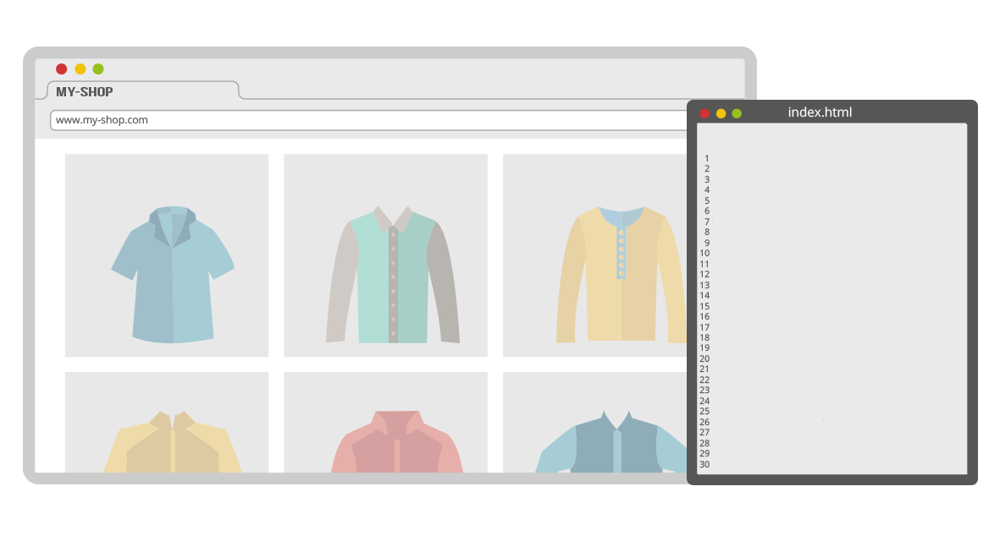
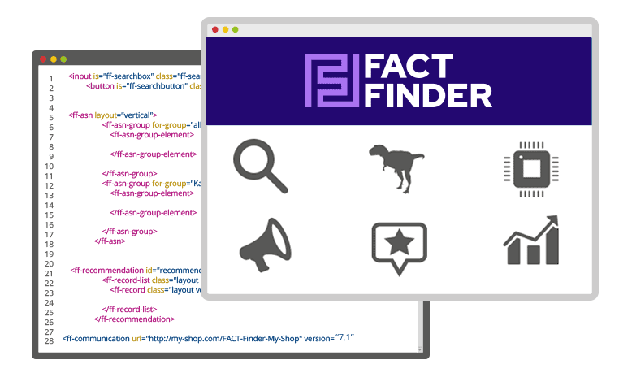
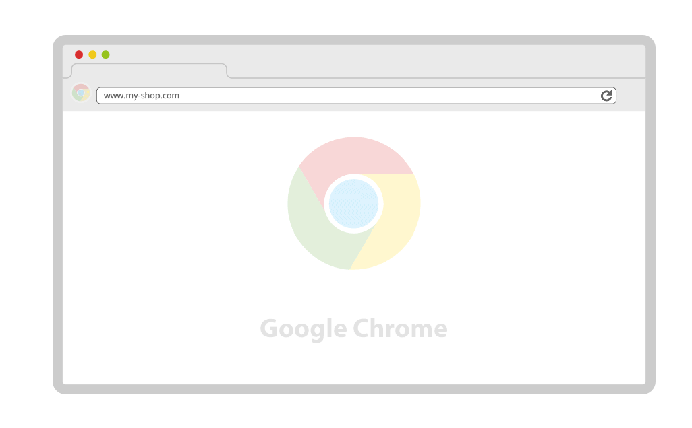

<link rel="import" href="../../bower_components/polymer/polymer-element.html">
<link rel="import" href="../../bower_components/app-route/app-route.html">
<link rel="import" href="../../bower_components/slate-font-awesome/slate-font-awesome.html">
<link rel="import" href="../shared-styles.html">

<dom-module id="home-view">
    <template>
        <style include="slate-font-awesome">
            .link-box-container {
                display: flex;
                flex-wrap: wrap;
                background-color: #f5f6f6;
            }

            .link-box {
                flex: 1 auto;
                flex-grow: 1;
                background-color: #35a9e1;
                color: #fff;
                margin: 1px;
                padding: 30px;
                flex-basis: 250px;
                vertical-align: middle;
                text-decoration: none !important;
                cursor: auto;
            }

            .link-box :hover {
                text-decoration: none !important;
            }

            .link-box > p {
                color: white;
                font-size: 16px;
                text-align: left;
            }

            .link-box > i {
                color: rgb(45, 132, 174);
                float: left !important;
                width: 1.28571429em;
                text-align: center;
                margin-right: .3em;
                font-size: 4em;
            }
        </style>

        <style include="shared-styles">
            :host {
                display: block;
            }

            h1 {
                font-size: 3rem;
                text-align: center;
            }

            p {
                font-weight: 400;
                color: #3c3c3b;
                font-size: 1.5em;
                text-align: left;
            }

            button {
                color: #fff;
                background-color: #3498db;

                border: none;
                font-size: 40px;
                font-family: Open Sans, Helvetica Neue, Helvetica, Roboto, Arial, sans-serif;

                font-weight: 700;
                line-height: normal;
                padding: 18px 36px 19px;
                transition: background-color 0.8s;
            }

            button:hover {
                background-color: #007bbf;
            }

            img {
                max-width: 100%;
                height: auto;
            }

            .row {
                display: flex;
                flex-wrap: wrap;
            }

            .row > a {
                margin: auto;
            }

            .row-item {
                flex: 1;
                min-width: 350px;
            }
        </style>

        

        <div class="container">
            <div class="row">
                <div class="row-item">
                    <h1><b>Up to 98% faster integration</b></h1>
                    <p style="text-align: center">
                        With the new FACT-Finder Web Components
                    </p>
                </div>
            </div>

            <hr>
            <div class="link-box-container">
                <a class="link-box" href="[[rootPath]]home/cost">
                    <i class="fa fa-eur fa-4x fa-fw pull-left"></i>
                    <p>Less project costs</p>
                </a>
                <a class="link-box" href="[[rootPath]]home/fast">
                    <i class="fa fa-code fa-4x fa-fw pull-left"></i>
                    <p>Faster frontend adjustments</p>
                </a>
                <a class="link-box" href="[[rootPath]]home/updates">
                    <i class="fa fa-calendar-o fa-4x fa-fw pull-left"></i>
                    <p>Easier updates</p>
                </a>
                <a class="link-box" href="[[rootPath]]home/browser">
                    <!--AP: fa-chrome dose not work with new font awsome wrapper-->
                    <i class="fa fa-thumbs-up fa-4x fa-fw pull-left"></i>
                    <p>Works in all major browsers</p>
                </a>
            </div>

            <hr>
            <div class="row" style="text-align: center">
                <div>
                    <h1><b>Integrating FACT-Finder has never been easier</b></h1>
                    <p>
                        As of now, FACT-Finder can be integrated into your online shop as easy as a YouTube video or a
                        Google map – by means of prefabricated HTML elements, so called Web Components. This enables you
                        to gain the ROI of FACT-Finder even faster.
                    </p>
                </div>
            </div>

            <hr>
            <div id="cost" class="row">
                
            </div>

            <hr>
            <div id="fast" class="row">
                <div class="row-item">
                    
                </div>
                <div class="row-item">
                    <h1><b>Front-end changes in a flash</b></h1>
                    <p>
                        Whether you’re including new store features, customising existing ones or setting up A / B
                        tests: all can now be done in record speed. It has never been so easy to quickly respond to
                        new demands and trends.
                    </p>
                </div>
            </div>

            <hr>
            <div id="updates" class="row">
                <div class="row-item">
                    <h1><b>Updates – made simple</b></h1>
                    <p>
                        Whenever there’s an update for a newer version of FACT-Finder, you can get it up and running
                        with minimal adjustments. And when it comes to updating your shop system, Web Components
                        ensure all FACT-Finder functions remain fully operational.
                    </p>
                </div>
                <div class="row-item">
                    
                </div>
            </div>

            <hr>
            <div id="browser" class="row">
                <div class="row-item">
                    
                </div>
                <div class="row-item">
                    <h1><b>Compatible with all major browsers</b></h1>
                    <p>
                        Web Components display the FACT-Finder functions directly in the browser and can be arranged
                        according to the look and feel of your online shop. In addition, they are functional
                        regardless of the shop system and web technologies that you are using.
                    </p>
                </div>
            </div>

            <hr>
            <div class="row" style="text-align: center">
                <a href="/documentation/get-started">
                    <button style="margin: 0 auto">Get Started</button>
                </a>
            </div>

        </div>
    </template>

    <script>
        class HomeView extends Polymer.Element {
            static get is() {
                return 'home-view';
            }

            static get observers() {
                return [
                    "changeRoute(route)"
                ]
            }

            changeRoute(route) {
                console.log("home.changeRoute", route);
                if (route.prefix === "/home") {
                    this.scrollTo(route.path);
                }
            }

            /**
             * Should scroll to element with that id
             * @param id, id of the element
             */
            scrollTo(id) {
                if (id && id != "") {
                    var element = this.$[id.replace("/", "")];
                    window.scrollTo(0, element.getBoundingClientRect().top);
                }
            }
        }

        window.customElements.define(HomeView.is, HomeView);
    </script>
</dom-module>
